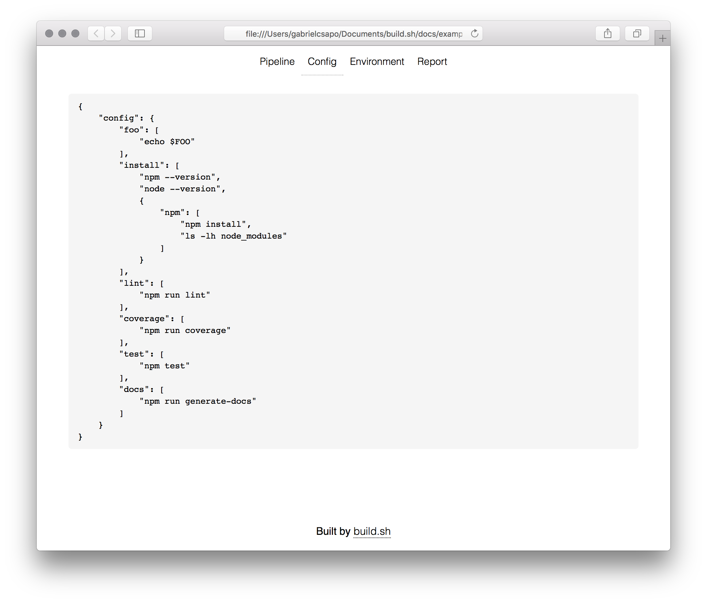

build.sh


🔨 run and visualize the build process
Installation
This module can be installed via npm, or for those who do not have node on their machines can use the packed binary found here which can downloaded to your computer and run as a executable.
npm install build.sh -gUsage
Usage: build [options]
Options:
-V, --version output the version number
-c, --config [file] the input file for the build pipeline to run
-d, --debug outputs a debug file of the build process and data captured
-h, --help output usage informationHow To
commit a
build.ymlfile to your project root
env:
- {key}={value}
pipeline:
{key}:
- {command}
- {command}To invoke about the pipeline simply run build at the project root.
The terminal output will show the pipeline being run and eventually will open the browser to the location of the final report.
This build pipeline:
output: ./docs
env:
- FOO=bar
pipeline:
install:
- npm --version
- node --version
- npm:
- npm install
- ls -lh node_modules
lint:
- npm run lint
coverage:
- npm run coverage
test:
- npm test
docs:
- npm run generate-docsthere is also the ability to run parts of pipeline by specifying which ones to run for example
build install:npm,lint,coverage,testwill only run the nested npm install, lint, coverage and test scripts

When running build with the above pipeline it will yield the following results:

Sometimes things go as planned and certain build phases will fail and that will yield:

An important factor when dealing with build pipelines is the persistence of environment variables and git information which is recorded and accessible via the Environment tab:

If the build report was ran and built using build.sh it will also record the yaml file that it ran with under the Config tab.
